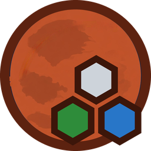
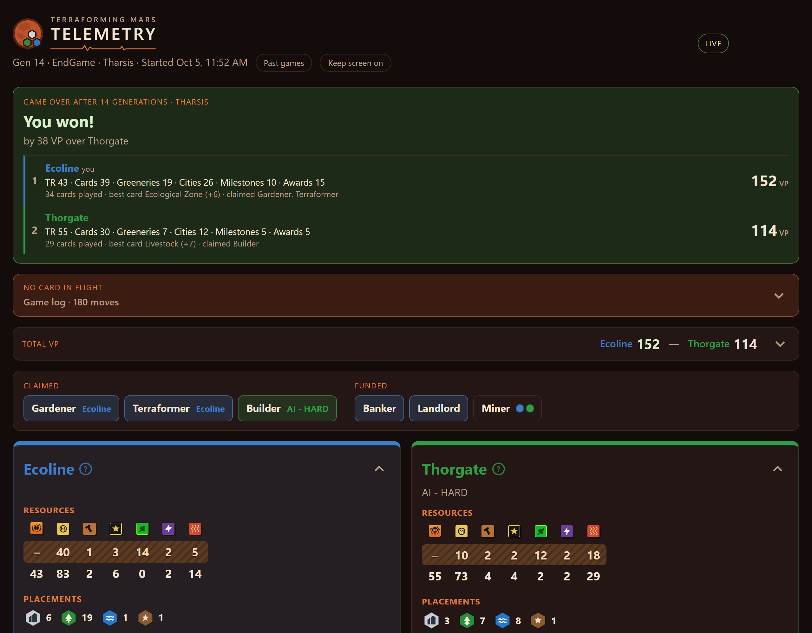
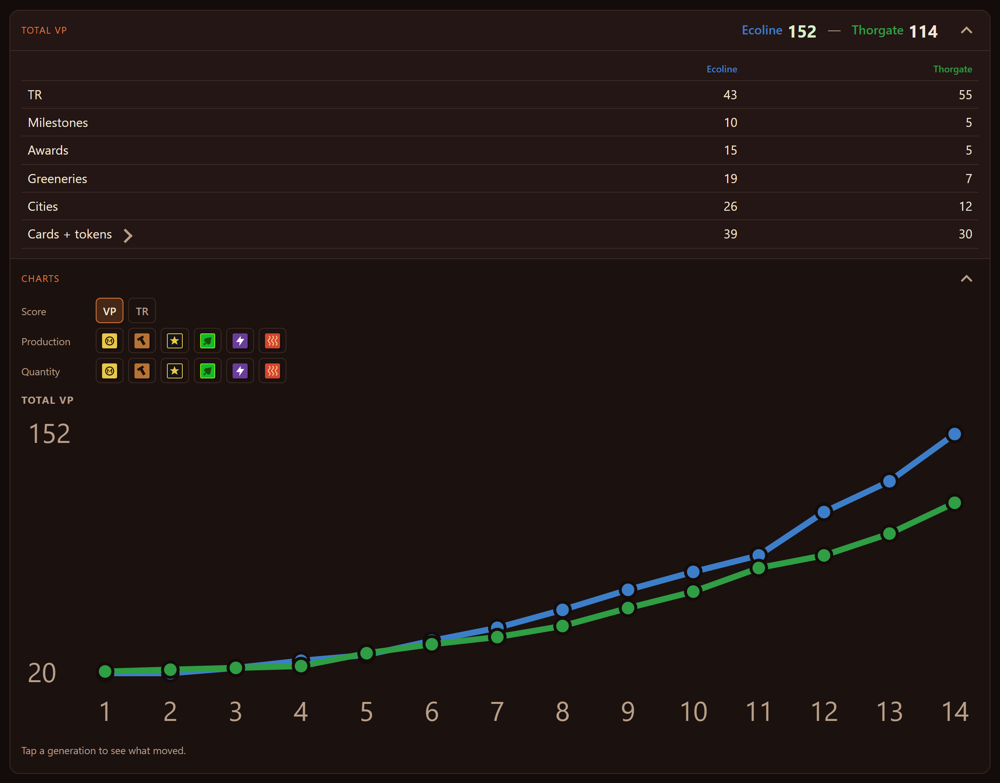
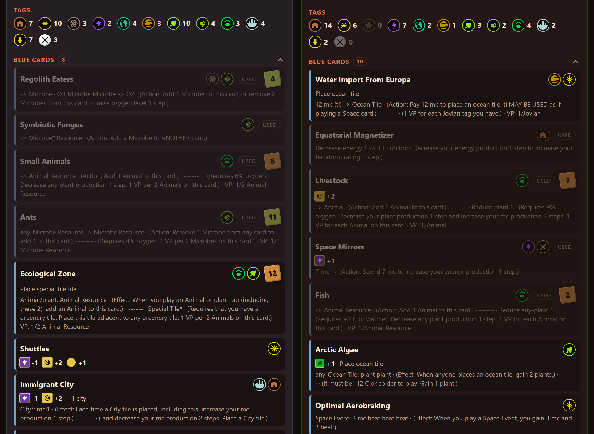
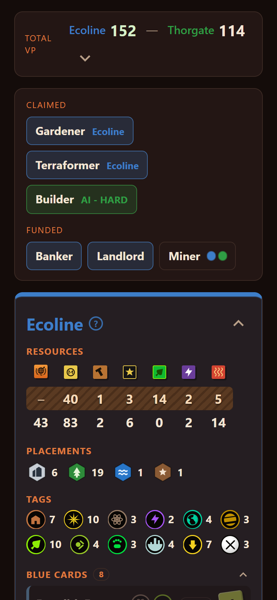

A live second-screen dashboard for the Terraforming Mars digital edition. Every player's board, the running score and tile-placement reminders, updated as you play.
Free · Windows installer · No account, no sign-up

What you get
Everything on the table, as it happens
While you play, Telemetry reads the game's own log on your PC and turns it into a live dashboard. It updates as soon as a card is played.
Know the score before the game ends
See what each player would score if the game ended right now: TR, milestones, awards, greeneries, cities and card points.
- Charts of score, production and resources by generation
- Tap a generation to see what changed
- Spot the moment the game turned
- A game-over summary with the winner, or whether you terraformed Mars in a solo game

Every player's board in one place
Tags, blue cards with their actions and resources, automated cards and events for every player. Know what your opponent is going for before they get there.
- Resources and production for everyone
- Milestone progress, worked out from public information
- Colonies, trade tracks and parked fleets

Follow along on your phone
Only one screen? Scan the QR code in the dashboard's header and it opens on any phone or tablet on your Wi-Fi. The layout is built to fit a phone.
Prop it up next to the keyboard and keep the game full-screen.

Also included
The little things that help
Placement reminders
A sticky note when the card you're playing places a tile, like Capital, Research Outpost or Mohole, with tips on where it can go.
Your hand, on your board
The cards you're holding, with their costs. Opponents' hands are never shown.
Past games
Every game is saved. Reopen its boards, charts and log any time.
Against AI or people
Works for games against the AI and against other players.
Automatic updates
The app tells you when a new version is ready to install.
Stays on your PC
It reads a log file on your computer. Nothing is uploaded and there's no account.
Get started
Up and running in three steps
You'll need Windows and the Terraforming Mars digital edition. The installer includes everything else, Java too.
Install it
Download TerraformingMarsTelemetry-Setup.msi and run it.
Windows may show "Windows protected your PC" because this is a small free app without a paid certificate. Click More info then Run anyway.
Start Telemetry, then play
Open Terraforming Mars Telemetry from the Start menu or desktop shortcut. A browser tab opens with the dashboard.
Start a game of Terraforming Mars. The dashboard fills in as you play. Drag that tab onto your second monitor.
Add your phone (optional)
The first time you start it, Telemetry asks to let phones on your Wi-Fi connect. Click Allow, then approve the administrator prompt.
Scan the QR code in the dashboard's header with your phone's camera.
Clicked Not now? Use the Allow phones button on the dashboard any time.
Want an older version? See all releases.
FAQ
Questions
Is this cheating? Can I see my opponent's cards?
No. Opponents' hands are never shown. Everything on the dashboard is something you could find in the game by clicking around: boards, tags, played cards, milestones and awards. Telemetry puts it all on one screen.
Does it work in multiplayer?
Yes. It works in games against the AI and against other people.
How does it work?
The digital edition writes a log of every move to a file on your PC. Telemetry reads that file as it changes and shows it in your browser. It doesn't touch the game itself.
Does it cost anything or send my data anywhere?
It's free. It runs on your own PC and doesn't upload your games or need an account. The only thing it checks online is whether a new version is available.
The dashboard is empty. What now?
Make sure you're playing the PC digital edition and that a game has started. Telemetry reads the log at %USERPROFILE%\AppData\LocalLow\LuckyHammers\Terraforming Mars\Player.log. If yours is somewhere else, open an issue and let me know.
My phone can't connect.
Your phone needs to be on the same Wi-Fi as your PC. If Windows Firewall is blocking it, click Allow phones on the dashboard and approve the administrator prompt. Then scan the QR code again.
Is it on Mac or Linux?
Not yet. The installer is for Windows only.
I found a bug or have an idea.
Great! Please open an issue on GitHub.